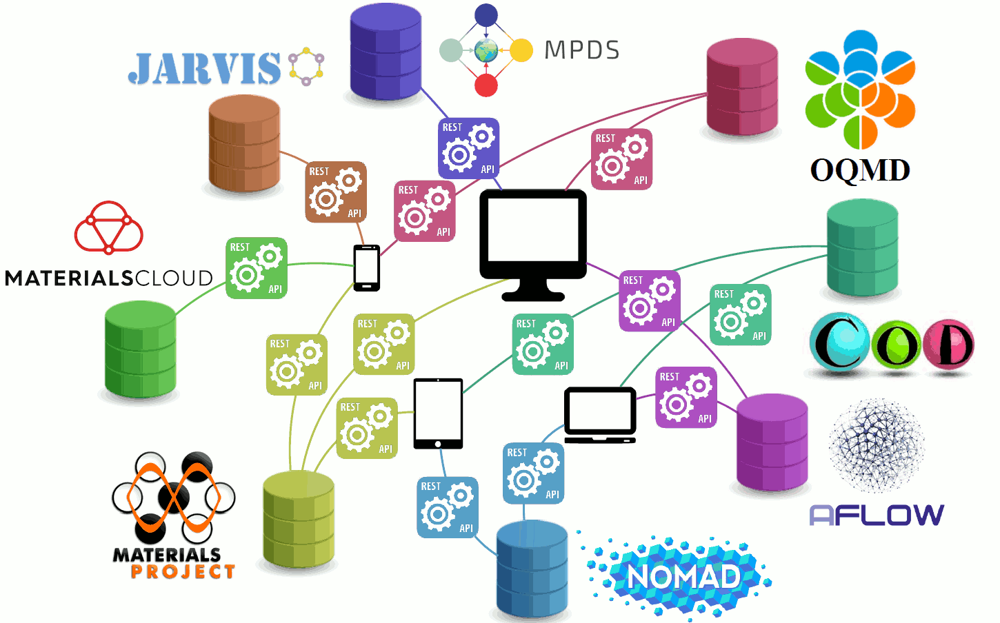

Introduction to materials informatics
Hi, that's me 🤓
Open the Python notebooks meanwhile.

Phase diagrams, physical properties, and crystal structures are interlinked from the published literature. Just hover and click the colored circles at the logo.
Outline
- data & formats
- software & simulations
- collaboration & sharing
Open the Python notebooks meanwhile.
From nanometers to meters
Data formats for nanometers 💎
POSCAR
https://mpds.io/entry/S251615
1.0000000000000000
0.0000 2.0245 2.0245
2.0245 0.0000 2.0245
2.0245 2.0245 0.0000
Al
1
Direct
0.000000 0.000000 0.000000
CIF
data_mpds_labs
_cell_length_a 15.017668
_cell_length_b 30.035337
_cell_length_c 30.035337
_cell_angle_alpha 118.543768
_cell_angle_beta 118.543768
_cell_angle_gamma 92.541335
_symmetry_space_group_name_H-M 'P1'
_symmetry_Int_Tables_number 1
loop_
_symmetry_equiv_pos_as_xyz
+x,+y,+z
loop_
_atom_site_type_symbol
_atom_site_fract_x
_atom_site_fract_y
_atom_site_fract_z
Ca 0.462 -0.342 -0.179
Be 0.362 -0.274 -0.420
...
Optimade
{
"attributes":{
"immutable_id":42,
"species":[
{
"chemical_symbols":[
"Au"
]
}
],
"cartesian_site_positions":[
[0,0,0]
],
"lattice_vectors":[
[0,2,2],
[2,0,2],
[2,2,0]
]
}
}
Python 🐍 & ASE 💎
from ase.spacegroup import crystal
crystal_obj = crystal(
('Al', 'Y', 'Cu', 'Cu'),
basis=[
( 0.235, 0.0, 0.5 ),
( 0.5861, 0.0, 0.0 ),
( 0.333, 0.666, 0.5 ),
( 0.0, 0.0, 0.0 )
],
spacegroup=189,
cellpar=[7.033, 7.033, 4.023, 90, 90, 120],
primitive_cell=True
)
MPDS
Phase diagrams, physical properties, and crystal structures are interlinked from the published literature. Just hover and click the colored circles at the logo.
Wow, many online databases?
Let's link them all together 🤝
Optimade queries
filter=elements HAS ALL "Al","Mg","Sc","Mn","O"
filter=chemical_formula_reduced="NaCl"
filter=elements HAS ANY "Np","Cf"
AND elements HAS "O"
AND nelements=2
filter=chemical_formula_anonymous="A2B"
AND chemical_formula_anonymous="AB2"
filter=_mp_bandgap > 5.0
filter=chemical_formula_descriptive IS KNOWN
Our community 👫
- matsci.org forum
- Stack Overflow in materials science
Have your online profiles ready 🎓
Conclusions 👌
- materials informatics is just about how to handle materials data efficiently
- Python + ASE can do anything about the nanometers for you
- POSCAR & CIF are the most common formats for crystal structures, but the Optimade is coming
- the modern materials simulations can be prepared and even conducted fully online.
PS
- contact me in case of any questions
- these slides are the code on GitHub 🤓